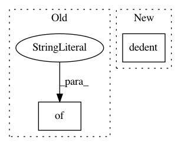

c7e6e4cfd90d2d05bb9c9dffd519b32e9a1f15f6,src/python/pants/reporting/html_reporter.py,HtmlReporter,HtmlReporter_3,#,207
Before Change
// We must flush in the same thread as the write.
f.flush()
_log_level_css_map = {
Report.FATAL: "fatal",
Report.ERROR: "error",
Report.WARN: "warn",
Report.INFO: "info",
Report.DEBUG: "debug"
}
def do_handle_log(self, workunit, level, *msg_elements):
Implementation of Reporter callback.
content = "<span class="{}">{}</span>".format(
After Change
</script>
)
_end_workunit_fmt_string = dedent(
<script>
$("//{id}-header-text").addClass("{status}");
$("//{id}-spinner").hide();
$("//{id}-timer").html("{timing}s");
if ({aborted}) {{
$("//{id}-aborted").show();
}} else if ("{unaccounted_time}" !== "") {{
$("//{id}-unaccounted-time").html("(Unaccounted: {unaccounted_time}s)").show();
}}
$(function(){{
pants.timerManager.stopTimer("{id}");
}});
</script>
)
def end_workunit(self, workunit):
Implementation of Reporter callback.
duration = workunit.duration()
In pattern: SUPERPATTERN
Frequency: 3
Non-data size: 2
Instances
Project Name: pantsbuild/pants
Commit Name: c7e6e4cfd90d2d05bb9c9dffd519b32e9a1f15f6
Time: 2015-10-23
Author: benjyw@gmail.com
File Name: src/python/pants/reporting/html_reporter.py
Class Name: HtmlReporter
Method Name: HtmlReporter_3
Project Name: pantsbuild/pants
Commit Name: 0601b23a3af44bf58e8bc8d5b85bbe1174b96590
Time: 2021-03-19
Author: 14852634+Eric-Arellano@users.noreply.github.com
File Name: build-support/bin/generate_github_workflows.py
Class Name:
Method Name: test_workflow_jobs
Project Name: pantsbuild/pants
Commit Name: df75d99aa353ecf4dd69185232041c952a3f72b7
Time: 2014-12-03
Author: john.sirois@gmail.com
File Name: tests/python/pants_test/graph/test_build_graph.py
Class Name: BuildGraphTest
Method Name: test_transitive_closure_address